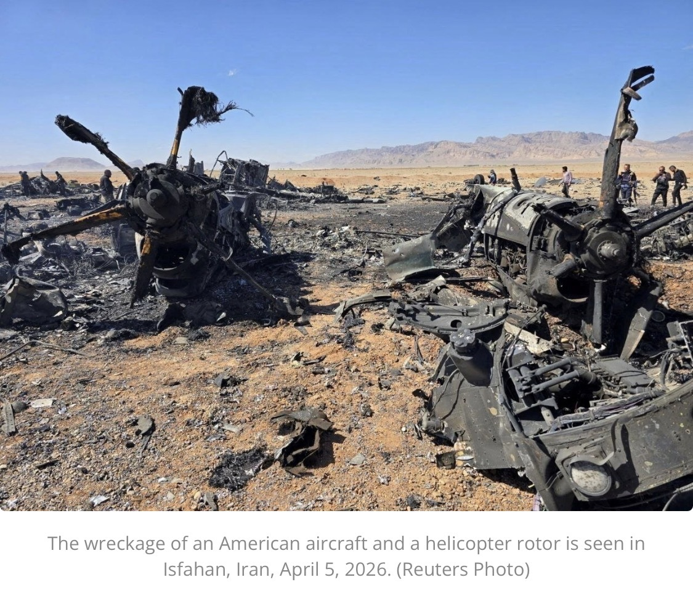
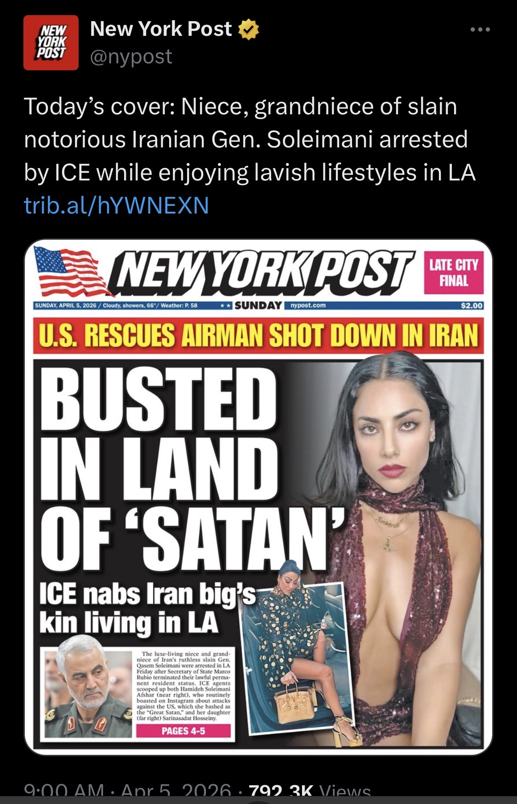

The Wire — What Matters Today
Top headlines from the sources that matter — selected for strategic relevance, not clicks. Coverage in English and French.


Washington · USA
Canada
Québec
World · Geopolitics
Markets · Economy
Last updated: April 10, 2026
Sources: Breitbart · Fox News · Fox Business · The Hill · Washington Times · Washington Examiner · White House · Congress.gov · Tax Foundation · Globe and Mail · Hill Times · CBC · Western Standard · La Presse · Le Devoir · Le Droit · CNBC · Yahoo Finance · Supply Chain Dive · Defence24 · European Commission · Ministère des Armées
Latest Commentary
Strategic analysis of political news that affects decision-makers
Subscribe to Corridor Intelligence
Free
Daily Brief headlines + daily commentary
Premium — $39/month
Full intelligence package

It worked. Both airmen are home. But the operation’s footprint raises a question that Iran’s foreign ministry is now asking publicly and that serious analysts should not dismiss: was the rescue the mission, or was it the cover?
Iran’s Foreign Ministry spokesman Esmail Baghaei pointed to a geographic problem. The downed pilot was located in Kohgiluyeh and Boyer-Ahmad Province — mountainous terrain in the southwest. The landing sites where U.S. forces staged were in central Iran, far closer to Isfahan, where the bulk of Iran’s 440 kilograms of 60%-enriched uranium sits buried under the rubble of facilities struck during Operations Midnight Hammer and Epic Fury.
The math doesn’t require conspiracy thinking. CNN reported in March that seizing Iran’s uranium would require a large ground force. Retired Admiral James Stavridis called it potentially the largest special forces operation in history — requiring over a thousand SOF operators and engineering units. The rescue operation deployed exactly that kind of force. MC-130Js are not medevac aircraft. They are special operations transports built for moving personnel, equipment, and cargo into denied territory. You don’t send four of them to pick up two men.
Deception is not an anomaly in war. It is doctrine. Every major military power builds secondary objectives into primary operations. The fog of a dramatic rescue — live updates, presidential announcements, wall-to-wall coverage — is precisely the environment in which a parallel extraction could proceed unnoticed. We may never get confirmation. We may not need it. The strategic outcome speaks for itself: if even a portion of that stockpile was secured, the calculus for every negotiation that follows just changed permanently.
What we do know: a 45-day ceasefire proposal is now on the table, brokered by Egypt, Pakistan, and Turkey. Iran has publicly rejected a temporary halt but has not walked away from talks. Trump extended his Strait of Hormuz deadline to Tuesday evening. The pieces are moving toward a deal — and a deal is far easier to close when your adversary’s most dangerous card has already been taken off the table.
Decision-makers should watch two things. First, whether the IAEA requests emergency access to Isfahan in the coming days — that will tell you whether something was moved. Second, whether the ceasefire terms include any provisions on nuclear material custody. If uranium appears in the framework, it was never just about two pilots.

The obvious question is the one no one in Washington wants to answer: how did they get in?
Not how did they evade detection. How did the system allow the blood relatives of the most dangerous Iranian military commander of his generation to obtain visas, clear background screening, enter the United States, and build comfortable lives in one of America’s most expensive cities — while the country their uncle commanded was actively killing Americans and destabilizing the Middle East?
This is not an immigration story. This is a counterintelligence story. Every relative of a senior IRGC commander living on American soil is a potential leverage point for Tehran — a channel for influence, intelligence collection, or coercion. The vetting apparatus that let this happen did not fail at the margins. It failed at the center.
The broader pattern is what should concern decision-makers. If Soleimani’s own family can slip through, the question is not who else is here. The question is who else was never even flagged.
This is vintage Trump. The language is deliberately misplaced, the timing surgically provocative, and the result predictable — wall-to-wall coverage, outrage from the base, and domination of the news cycle on a day most presidents spend at church. It works. It always works. The question isn’t whether it gets attention. The question is what it costs.
Presidential prestige is a finite strategic asset. Every commander-in-chief inherits it, spends it, and leaves it either stronger or weaker than they found it. Trump’s instinct — use provocation to control the narrative — has been his defining political weapon since 2015. But attention is not the same as authority, and dominating a news cycle is not the same as commanding respect on the world stage.
Some will argue this is unnecessary — that a wartime president with airmen in harm’s way over Iran doesn’t need to manufacture controversy on Easter morning. Others will say this is simply who he is, and to fixate on style is to miss the substance entirely. Both are right. The skill for decision-makers is knowing which lens matters in which moment — and not tripping over the stile when the field beyond it is what demands your attention.
The first airman was recovered quickly. This one evaded capture for over a day, wounded, climbing a 7,000-foot ridgeline in hostile territory before hiding in a mountain crevice and activating his emergency beacon. The extraction required hundreds of special operations forces, dozens of aircraft, and — according to senior administration officials — a CIA deception campaign inside Iran to misdirect search parties while the real recovery unfolded. That is not a routine pickup. That is a statement of capability.
What decision-makers should read from this: both crew members are now accounted for. The hostage-crisis scenario that would have paralyzed Washington’s freedom of action is off the table. The administration retains the initiative, and the domestic narrative stays on competence rather than loss. Iran, meanwhile, absorbs the humiliation of a successful extraction operation conducted on its own soil — the kind of operational fact that constrains a regime’s response options more than any diplomatic cable.
The colonel’s survival and recovery will dominate the next 48 hours of coverage. Watch what moves underneath it. When a news cycle is this loud, the quieter decisions are usually the consequential ones.
Here’s the uncomfortable truth: in coercive diplomacy, clarity matters more than courtesy. When Khrushchev banged his shoe at the UN, the world understood his message. When LBJ used language in private that would end careers today, foreign leaders got the point. Profanity, used deliberately, can signal resolve — that the speaker has moved past posturing and into operational intent.
But there’s a critical difference between controlled escalation and loss of composure. Effective coercive diplomacy requires two things: a credible threat and a credible off-ramp. Trump’s rhetoric delivers the first. The problem is the second. When you call your adversary “crazy bastards” on a public platform, you narrow their ability to comply without humiliation — and humiliated regimes don’t surrender, they escalate.
The real risk isn’t the profanity. It’s the rhetoric-reality gap. If Tuesday comes and the Strait is still closed and the strikes don’t come, every future threat loses weight. If the strikes do come, the profanity becomes a footnote to a wider war. Either way, the language itself isn’t the strategy — it’s a tell about whether one exists.
Decision-makers with exposure to energy markets, defence supply chains, or Middle East operations: the 48 hours after Monday’s deadline expiry are the ones to watch. Position accordingly.